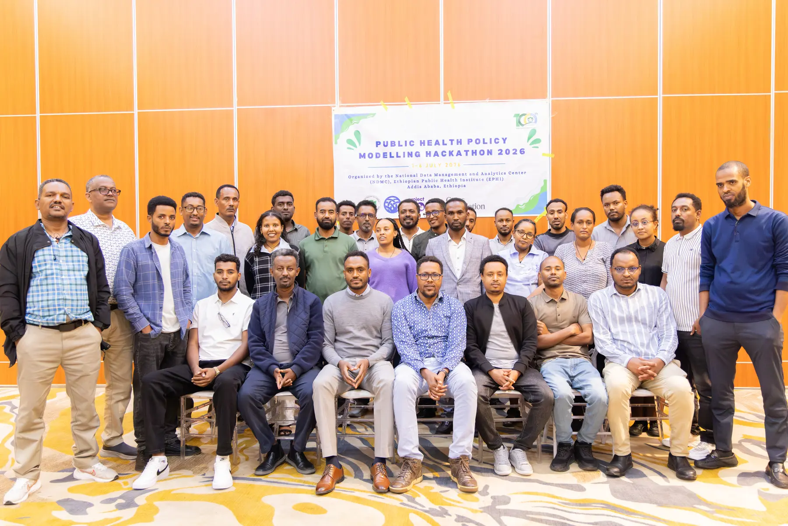
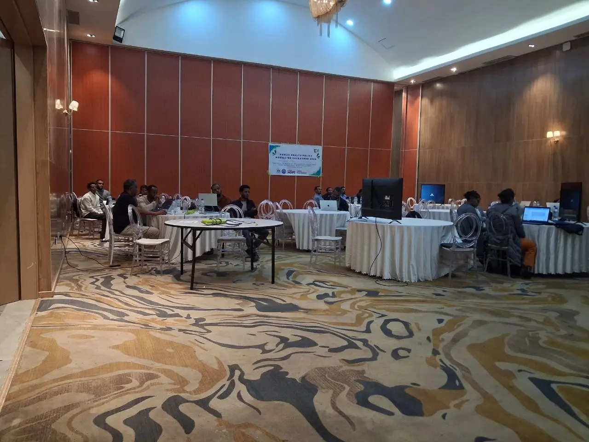
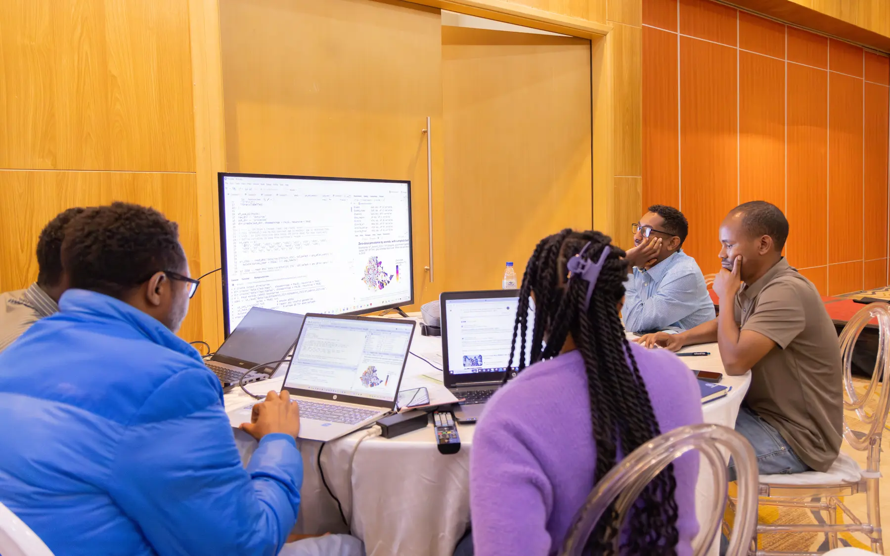
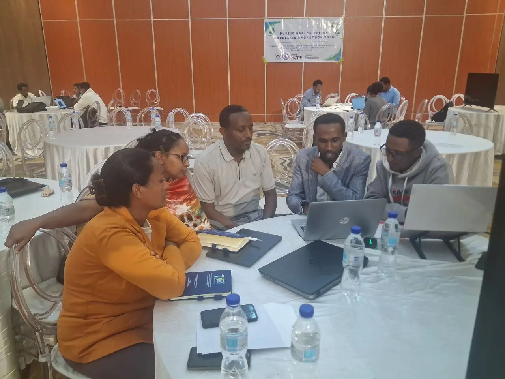
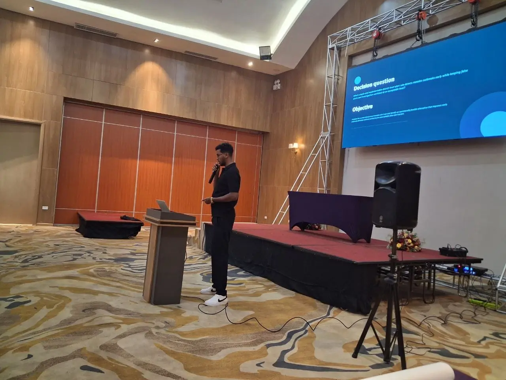

NDMC Public Health Policy Modelling Hackathon 2026
Six days of collaborative modelling, prototype development and policy dialogue
Mulugeta Geremew Geleso · 6 July 2026
Six-day journey
The sprint linked programme priorities with technical work, review and practical next steps.
Day 1 · 1 July
Day 2 · 2 July

Git and GitHub refresher, repositories, commits, branches and collaborative review.
Decision-makers clarified the context, outcome measures, assumptions and available data.
Each family left with a problem statement, data inventory, prototype design and task allocation.
Day 3 · 3 July
Cleaning, harmonization and exploratory analysis
Model, map, threshold, allocation or scenario logic
Early output reviewed for blockers and next steps

Day 4 · 4 July

Improve the prototype and interpretation.
Test usability, assumptions and policy relevance.
Respond to feedback and clarify the next action.
Day 5 · 5 July

Day 6 · 6 July
Final presentations
Which decision or prioritization problem is being addressed?
Which sources were used, and what quality limits remain?
What can be demonstrated now?
What should be refined, repeated or adopted next?
Thank you
The families carry forward the models, prototypes, documentation and partnerships built during the six-day sprint.